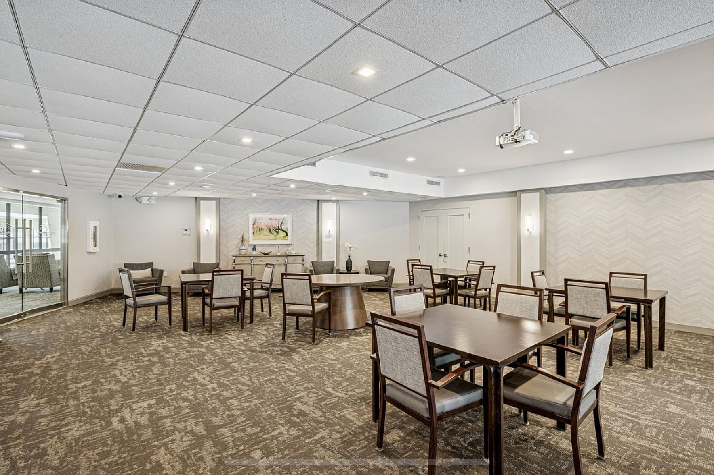
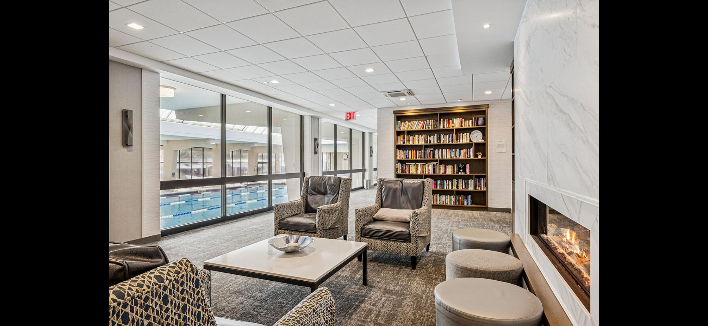
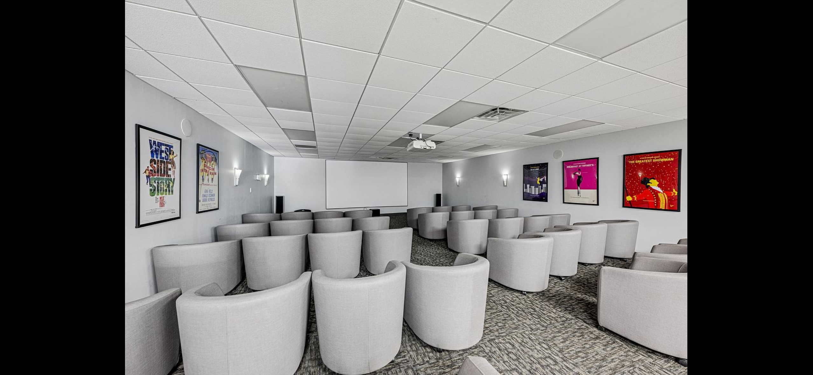
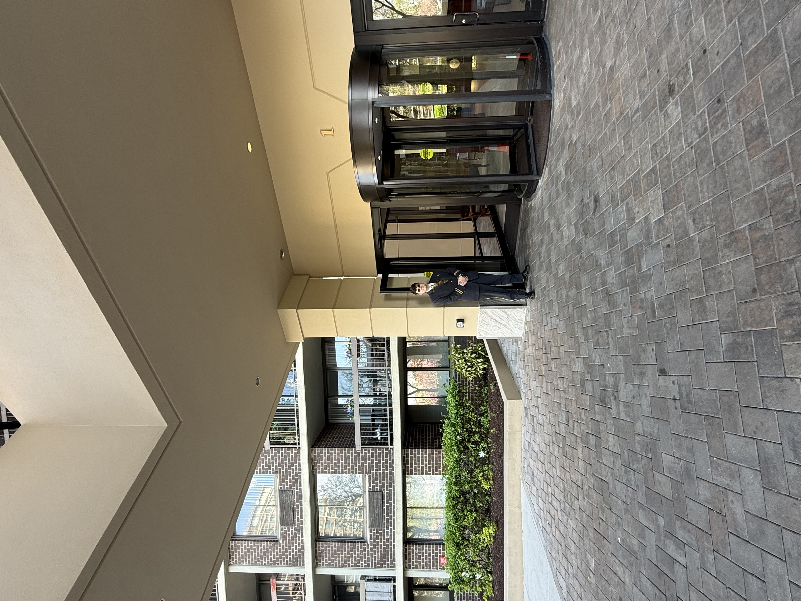
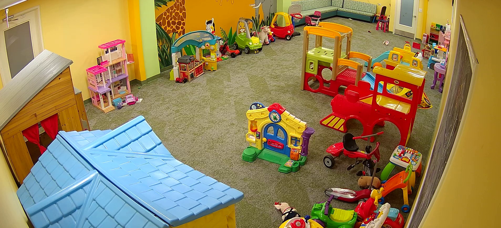
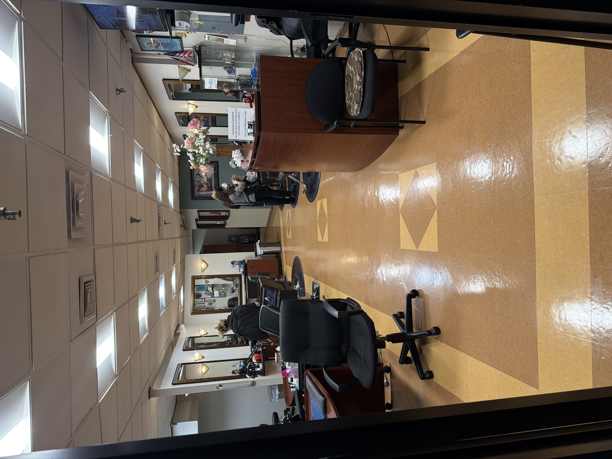
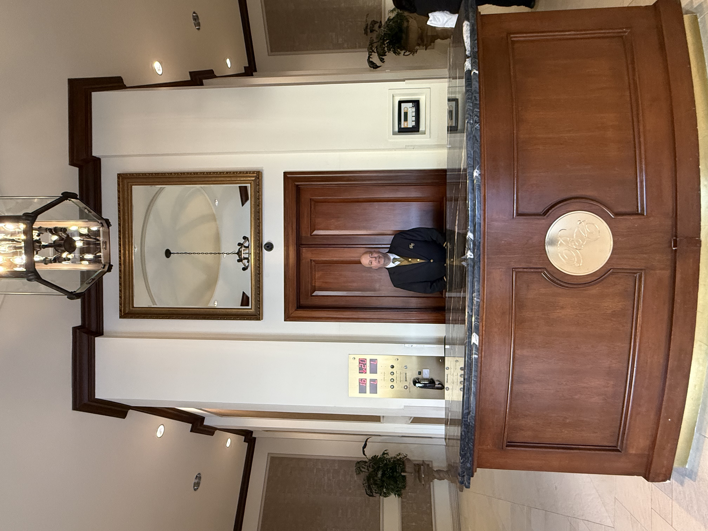
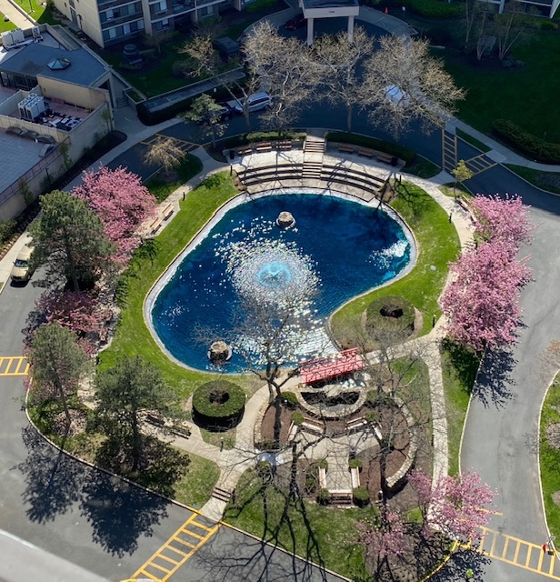

Address scale
13 landscaped acres
A rare amount of open space for a Queens waterfront condominium setting.
A gated, concierge-served condominium community set on 13 landscaped acres beside Little Neck Bay. Residents enjoy two full-service towers, a 25,000 sq ft Leisure Club, and on-site conveniences usually reserved for private clubs.

Waterfront living at The Bay Club, Bayside means gated security on 13 landscaped acres, concierge-attended towers and a resort-scale Leisure Club with indoor-outdoor pool, fitness, courts and on-site conveniences—all with Little Neck Bay moments away.
A rare amount of open space for a Queens waterfront condominium setting.
Indoor pool, fitness, courts, social rooms, and wellness features in one hub.
24-hour entry, doormen, and concierge support for daily convenience and privacy.
The Bay Club brings together full-service living, on-site amenities, and a connected neighborhood feel, all framed by water and skyline views. Explore the highlights below to see how the community is designed for daily ease and elevated living.

Studio, one-, two-, and three-bedroom layouts with private terraces, expansive glazing, modern kitchens and spa-inspired baths backed by full-service building operations. Floor plans and availability can be found in the Residences section and through the live listing links.

The three-level Leisure Club anchors the community with a glass-enclosed pool, gym, courts, and spa-style amenities, plus a year-round calendar of social programming. It pairs modern resort wellness with the service and standards of a private club.

The SC Level and concourse connect residents to everyday services, including a convenience store, beauty salon, and valet dry cleaner. Garage parking includes EV charging stations in each building, so a Tesla or other EV can charge while you’re at home.
Beyond the amenities themselves, The Bay Club is designed around daily rhythm and community—fitness, social connection, and convenient services woven into one address.


The Leisure Club supports everything from early-morning workouts to weekend basketball pick-up games. Daily schedules feature lap swim, group fitness, pickleball, tennis, and family swim hours.

The restaurant is located inside the Leisure Club and offers in-house seating, delivery, and take-out options, along with nearby lounge and event spaces for resident gatherings.



Residents can join social hours, bridge and mahjong meetups, book clubs, group fitness classes, and casual movie nights in the lounge throughout the week.

The landscaped pond and open grounds create a sense of breathing room that is rare in city living. Walking paths, mature trees, and water views add a quiet visual rhythm to daily life and reinforce The Bay Club’s private, campus-like setting.

Doormen, concierges, a 24-hour gatehouse and a large on-site staff keep the property running in the background—bringing hotel-style service to a modern condo setting. Emergency contacts and management details are provided in the Residents Area directory.
From the indoor pool to outdoor play areas and Kids Club programming, The Bay Club is a place where children, parents and grandparents all have something of their own. The sections below highlight key family-focused amenities across the community.

A dedicated space for children’s activities, from arts and crafts to games and homework time, with seasonal schedules, age ranges, and registration details coordinated through management.
.jpeg)
Outdoor play spaces and a children’s splash area complement the main pool, giving younger swimmers a space scaled to them while adults relax nearby.

Family swim hours, multi-purpose rooms for birthday parties and teen-friendly sports like basketball or pickleball help keep weekends and school breaks active without leaving the property.
On-site services and the commercial mix are located on the SC Level and concourse, giving residents quick access to everyday essentials.

Everyday essentials, snacks and household basics available on site so quick trips don’t require leaving the property.

On-site salon services for haircuts, styling and grooming simplify self-care with easy access for residents.

Drop-off and pick-up service with in-building delivery keeps wardrobes in rotation with convenient turnaround.

Located inside the Leisure Club, the restaurant offers seating, delivery, and take-out options for everyday dining.

Concierge and staffed package handling keep deliveries secure and simplify day-to-day logistics, especially for residents who receive frequent shipments.
The Bay Club’s board works with standing committees focused on everything from finances to landscaping, helping residents stay involved and informed.
Imagery below is drawn from public real estate listings to provide an overview of the property layout and setting.



Photography credit remains with the original listing providers.
Signature spaces and everyday conveniences that define life at The Bay Club, from wellness and recreation to on-site services.
Compare layouts, review active listings, and plan an in-person visit of the towers, club, and waterfront amenities.